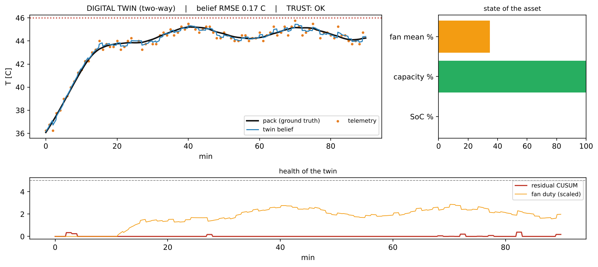
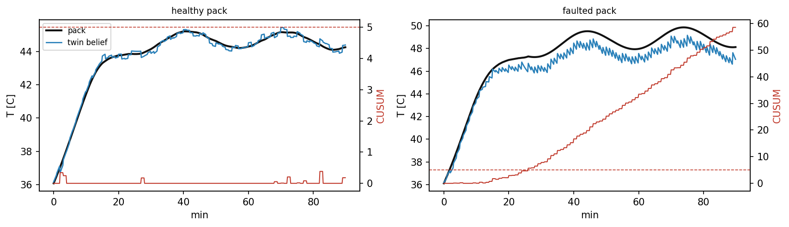
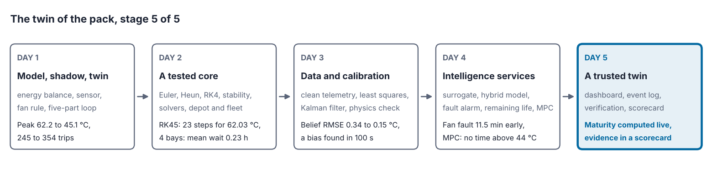
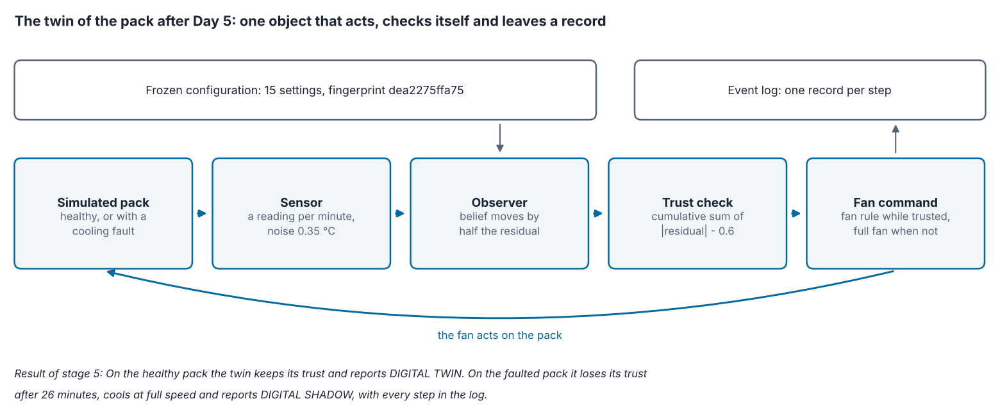

Overview
The last day assembles the twin and asks whether it deserves trust. A dashboard shows the operator what matters, including how far the twin itself can be trusted. The maturity level of Day 1 is computed from the state of the twin instead of being declared. A frozen configuration and an event log make every run reproducible [1]. Verification checks that the equations are solved correctly, validation checks that they are the right equations [2], and a credibility scorecard collects the evidence [3]. The assembled twin is finally run on a healthy and on a faulted pack.
Day at a glance
flowchart LR A["A dashboard for the operator"] --> B["Maturity from the state"] B --> C["Configuration and the event log"] C --> D["Verification and validation"] D --> E["Credibility scorecard"] E --> F["The assembled twin"] F --> S["The twin of the pack, stage 5"] S --> G["Your asset and the final project"]
Every method on this page is also written as Python code in the Colab notebook of the day. A Colab notebook is a document of text and Python code that runs in the web browser, with nothing to install. Its code is divided into numbered sections. Each orange box on this page names the section whose code carries out what the text above the box explains. The box says what to run and what to look at in that section, and its button opens the notebook at that place. The practice parts and the self-assessment of the day are in the interactive lab.
A dashboard for the operator
Over four days the twin of the pack has gained its parts. Day 1 stated the model and the two data flows of a twin, from the sensor to the belief and from the belief to the fan. Day 2 verified the simulation core. Day 3 cleaned the telemetry, calibrated the parameters and corrected the belief with a filter. Day 4 added the services: surrogates, a hybrid model, fault detection with a cumulative sum, the remaining useful life and a controller that plans the fan.
This day puts the parts of the project together and asks the question that decides whether the twin may be used: how far it deserves trust. It ends with the brief of the final project, in which every student builds a twin of this kind for an asset of their own.
An operator needs few numbers, at the right time, with their meaning. Three things belong on one screen: the state of the asset, how far that state can be trusted, and the alarms that require action. The dashboard of the project shows the temperature against its limit, the fan duty and one line that is often missing from twin dashboards: the residual between the twin and the sensor, which tells the operator how far the twin can be trusted at this moment. A good dashboard uses colour sparingly, for states that require action, and shows units on every axis.
The dashboard of a car shows few numbers: the speed, the fuel and a handful of warning lights that come on only when the driver has to act. The car measures far more, and showing all of it would make the car harder to drive. The dashboard of a twin follows the same rule and adds one line that a car rarely has: how far its own picture of the asset can be trusted.
The asset and its model. The asset of the course is the 48 V lithium-ion battery pack of Day 1. The current \(I\) of its load heats it through the internal resistance \(R\) with the power \(I^2 R\), the surrounding air cools it, and a fan adds to the cooling. The temperature \(T\) of the pack follows the balance of the two:
The left side is the rate of change of the temperature, in degrees per second. \(T_{\mathrm{amb}}\) is the ambient temperature, the temperature of the surrounding air, 35 °C on the trips of this day. The fan duty \(u\) runs from 0, fan off, to 1, full speed. The conductances \(hA_0\) and \(hA_1\), in W/K, state how many watts leave the pack for each degree above the ambient temperature: \(hA_0\) without the fan, and \(hA_1\) more at full fan. The heat capacity \(m c_p\), in J/K, is the energy that warms the pack by one degree. The twin never sees the values of the pack. It works with the values that Day 3 calibrated from measurements, which differ from the true ones by up to 2 percent.
| Parameter | Symbol and name in the code | Simulated pack | Twin, calibrated on Day 3 |
|---|---|---|---|
| Internal resistance | \(R\), R0 | 0.045 ohm | 0.0456 ohm |
| Heat capacity | \(m c_p\), m_cp | 9000 J/K | 9180 J/K |
| Conductance without the fan | \(hA_0\), hA0 | 2.2 W/K | 2.193 W/K |
| Conductance added by the full fan | \(hA_1\), hA1 | 12.0 W/K | 12.23 W/K |
Python code in the Colab notebook, Section 1. Open Section 1 of the Colab notebook and run it. The cell defines the two parameter sets of the table above, TRUE for the simulated pack and CAL for the twin, and prints the calibrated values. The model itself, the function pack_derivatives, stands in Section 0, the setup.
State. Besides the temperature, the dashboard shows the state of charge, abbreviated SoC, which is the share of the capacity \(Q\) still in the pack. The full pack holds 60 Ah when new, and the current empties it at the rate
The factor 3600 converts the hours of the capacity into seconds. A current of 40 A empties a full pack in \(60 / 40 = 1.5\) hours. The capacity itself fades with use, but over months, so it hardly changes within one trip.
The loop of the twin. The pack and its twin are simulated side by side for 90 minutes of a highway trip, in which the current swings between 34 and 46 A. Both start at 36 °C and advance in steps of \(\Delta t = 10\) s with the fourth-order Runge-Kutta method of Day 2, abbreviated RK4. The twin computes with the calibrated parameters, so the temperature that it holds, written \(\hat{T}\) with a hat and called its belief, drifts slowly away from the true one. Once per minute the sensor delivers a reading \(y_k\), where the index \(k\) numbers the readings:
The reading is the true temperature at the time \(t_k\) plus two errors. The bias \(b\) is a constant offset of the sensor, zero unless a fault is staged. The noise \(\varepsilon_k\) is drawn anew for every reading, normally distributed with mean 0 and standard deviation \(\sigma\). The sensor of the course has \(\sigma = 0.35\) °C, rounds its readings to steps of 0.25 °C and loses 2 percent of them. The twin compares each reading with its belief and corrects the belief:
The residual \(r_k\) is the reading minus the belief at that moment. The belief moves towards the reading by the share \(K\) of the residual. \(K\) is called the gain and is 0.5 here. A belief of 44.0 °C and a reading of 44.6 °C give a residual of \(44.6 - 44.0 = 0.6\) °C and a new belief of \(44.0 + 0.5 \times 0.6\)\({} = 44.0 + 0.3\)\({} = 44.3\) °C. With \(K = 1\) the belief would copy every reading with its noise, as the shadow of Day 1 did. A rule of this form is called an observer, and the Kalman filter of Day 3 is an observer that computes its gain instead of fixing it [6]. The second data flow leads back to the pack: The twin sets the fan from its belief,
The fan starts at the threshold \(T_{\mathrm{on}} = 42\) °C and reaches full speed 6 °C higher, at 48 °C, so a belief of 45 °C gives a duty of \((45 - 42) / 6 = 3 / 6 = 0.5\). The pack counts as overheated above its limit of 46 °C.
Trust. While the model describes the pack, the residuals are small and scatter around zero. A single large residual may be noise, so the twin adds the residuals up in the cumulative sum of Page that Day 4 introduced [7]:
\(S_k\) is the sum after reading \(k\). The absolute value lets residuals of both signs count. The allowance \(\kappa\) is subtracted at every reading and absorbs ordinary noise, and the max keeps the sum from falling below zero. The residual alarm is raised when the sum exceeds the decision limit \(h\). The twin uses \(\kappa = 0.6\) °C and \(h = 5.0\) °C. Day 4 added the residuals with their sign, which detects a drift in one direction. The absolute value used here reacts to a drift in either direction.
Six readings have the residuals 0.4, \(-0.9\), 0.2, 2.0, 2.4 and 2.6 °C, and the allowance is 0.6 °C. After the first reading the sum is \(\max(0,\, 0 + 0.4 - 0.6) = 0\). The second residual counts with its size, \(|-0.9| = 0.9\), and gives \(0 + 0.9 - 0.6 = 0.3\), and the third \(\max(0,\, 0.3 + 0.2 - 0.6) = 0\): Small residuals are forgotten.
The last three residuals are large. The sum becomes \(0 + 2.0 - 0.6 = 1.4\), then \(1.4 + 2.4 - 0.6 = 3.2\), then \(3.2 + 2.6 - 0.6 = 5.2\). It exceeds the decision limit of 5.0 at the sixth reading, where the alarm is raised. A limit of 3 °C on single residuals would have stayed silent.
Interactive lab, Part D. The trust loop of the twin over twelve readings of a pack with a hidden fault: the residual, the cumulative sum, the corrected belief and the fan command with its fail-safe switch. Sliders set the fault, the gain, the allowance and the decision limit.
A simulation knows the true temperature, so the error of the belief can also be measured directly. Its measure is the root mean square error, abbreviated RMSE, of \(N\) errors \(e_1, \ldots, e_N\):
The errors are squared, so that their signs do not cancel, then averaged, and the root returns to degrees: Errors of 0.1, \(-0.2\) and 0.2 °C have the squares 0.01, 0.04 and 0.04, which add up to 0.09, and an RMSE of \(\sqrt{0.09 / 3} = \sqrt{0.03} = 0.17\) °C. On the dashboard, \(e_k\) is the belief minus the true temperature at each of the \(N = 540\) steps. The trust reads OK for a belief RMSE below 1 °C, DEGRADED up to 3 °C and DO NOT TRUST above. On a real asset the true temperature is unknown and this number cannot be computed, which is why the alarm is built on the residuals.
Alarms. The dashboard has two alarms. The overheat alarm, a temperature above the limit of 46 °C, concerns the asset. The residual alarm of the cumulative sum concerns the twin.

In the upper left panel of the figure the black line is the true temperature of the pack, the blue line the belief of the twin and the orange dots the readings. The dotted line marks the limit of 46 °C. The fan starts at minute 11, when the belief passes 42 °C, and the temperature levels off near 44 to 45 °C, with a peak of 45.21 °C. The title gives the level of the twin, the belief RMSE of 0.17 °C and the trust OK. The bars on the right summarise the state of the asset. The fan ran at 35 percent on average, and the capacity is at 99.96 percent of its new value. The state of charge is at zero. The pack started at 92 percent, that is with \(0.92 \times 60 = 55.2\) Ah, and a mean current of 40 A draws this charge in \(55.2 / 40 = 1.38\) hours, which is \(1.38 \times 60 = 82.8\), about 83 minutes. In the simulation, in which the current swings, the pack is empty after 82 minutes. The lower panel shows the health of the twin. The red line, the cumulative sum, never rises above 0.4 and stays far below its decision limit of 5, the dashed line. The orange line is the fan duty, multiplied by 5 to share the axis. The pack spent 0 s above 46 °C, and no residual alarm was raised.
Python code in the Colab notebook, Section 2. Open Section 2 of the Colab notebook and run it. The function run_twin simulates the pack and its twin with the observer and the cumulative sum, and dashboard draws the figure shown here and prints the peak temperature, the seconds above 46 °C and the time of the residual alarm. In Colab the cell shows sliders above the figure. Move T_amb and fan_on to change the day and the fan threshold, untick the box twin may actuate to turn the twin into a shadow, and move sensor_bias to stage a faulty sensor.
Check your understanding. The cumulative sum of a twin stands at 4.2 °C, with an allowance of 0.6 °C and a decision limit of 5.0 °C. The next residual is \(-1.5\) °C. What happens?
Maturity computed from the state of the twin
Day 1 defined models, shadows and twins by their data flows [8]. A digital model exchanges no data with the asset automatically, a digital shadow receives data from the asset automatically, and a digital twin also sends commands back automatically. A running system can lose a flow at any moment: The telemetry may stop, the actuator may be disabled, or the belief may drift beyond what the residual allows. The twin of the project therefore computes its maturity level from its live state, so that the label shown to the operator is always true.
Telemetry is the stream of readings that the asset sends, and the actuator is the device through which the twin acts on the asset, here the fan. The computation takes three facts: whether telemetry arrives, whether the actuator responds, and the RMSE of the belief. It checks the rules of the table from top to bottom, and the first rule that applies decides.
| Rule | Condition | Level | Meaning |
|---|---|---|---|
| 1 | No telemetry arrives | DIGITAL MODEL | Open loop: The predictions are not anchored to the asset and must not be acted on |
| 2 | The belief RMSE exceeds the trust limit of 3.0 °C | DIGITAL MODEL (degraded) | Telemetry is present, but the model no longer follows it |
| 3 | The actuator does not respond | DIGITAL SHADOW | Monitoring only: The twin cannot influence the asset |
| 4 | None of the above | DIGITAL TWIN | Closed loop: The twin acts on the asset |
The order of the rules carries the meaning. Without telemetry the twin is a model, whatever its actuator can do. With a belief that is off by more than the trust limit, the status is degraded even when both flows work. A twin whose model no longer describes the asset is no longer a twin, and it should say so and fall back to a safe action. Five test cases show the rules at work. With both flows the level is DIGITAL TWIN for a belief RMSE of 0.4 °C and DIGITAL MODEL (degraded) for 5.2 °C. Without actuation it is DIGITAL SHADOW, and without telemetry DIGITAL MODEL.
A phone shows no bars or the words emergency calls only when it loses its network, instead of the full signal it had an hour ago. Its status is computed from the live link, not copied from the brochure. A twin that labels itself in the same way never shows an operator a promise that the running system no longer keeps.
In the animation both flows can be switched off and on. Its trust limit is a slider that starts at 1.5 °C, and it shows the degraded state as DEGRADED. Its last line names the policy of each state: Only the digital twin controls the fan, and the degraded state switches to fail-safe cooling, the fan at full speed.
Animation. The maturity level computed from the state of the twin. Switch telemetry and actuation off and on and raise the belief error above the trust limit.
Python code in the Colab notebook, Section 3. Open Section 3 of the Colab notebook and run it. The function maturity_level is the table above, one if for each rule. The cell calls it for five combinations of telemetry, actuation and belief RMSE and prints the level and its meaning for each.
Check your understanding. The telemetry of a twin stops for ten minutes. What should the dashboard show?
Configuration and the event log
A result that cannot be reproduced cannot be checked. The twin of the project therefore stores every setting of a run in a frozen configuration with a fingerprint and writes every step, with its belief and its command, to an event log [1]. Two runs with the same configuration produce the same log, and a changed setting changes the fingerprint.
The flight recorder of an aircraft stores the settings and the measurements of every second with their times, so that investigators can reconstruct a flight long after it ended. A recipe with exact amounts, times and temperatures does the same for a cake: Another cook can repeat it and get the same result. The frozen configuration and the event log make a run of the twin repeatable and checkable in this sense.
The frozen configuration. A configuration is the complete list of settings that decide how a run behaves. The configuration of the twin holds 15 of them. Among them are the time step, the interval between readings, the fan threshold, the gain of the observer, and the allowance and the decision limit of the cumulative sum. The four parameters of the model and the seed belong to it as well. The seed is the number that starts the random number generator: With the same seed the simulated sensor produces the same noise. Frozen means that no setting can be changed after the object has been created, so a different setting requires a new configuration.
The fingerprint. The fingerprint is a short code computed from the settings. They are first written as text in JSON, the JavaScript Object Notation, a plain-text format of named values, with the names in sorted order. A hash function then turns the text into a fixed number of characters. The twin uses SHA-256, the Secure Hash Algorithm with an output of 256 bits, written as 64 hexadecimal characters, and keeps the first 12:
The same settings always give the same fingerprint, dea2275ffa75 for the configuration of the day. A single changed setting gives an unrelated one: With the fan threshold at 40 °C instead of 42 °C the fingerprint is a54d02475539. The settings cannot be read back from a fingerprint, so the configuration itself is saved as a JSON file and can be loaded again unchanged.
The event log. An event log is a file to which the twin only appends, one record per step. The twin writes JSON lines, one record per line, for example {"fp": "dea2275ffa75", "t": 100.0, "T_true": 36.888, "T_belief": 37.023, "u": 0.0}. The field fp is the fingerprint, t the time in seconds and u the fan duty. The fingerprint stands in every record, because logs are split, merged and partly lost, and a record that cannot name its configuration proves nothing. The true temperature can be logged only because the pack is simulated.
Scene: The event log. The twin of the pack writes its event log, one record per 100 s, each with the fingerprint of its configuration. The scene uses five of the settings and computes the fingerprint as the notebook does: the first 12 characters of the SHA-256 hash of the settings as sorted JSON text. Changing the fan threshold needs a new configuration and gives an unrelated fingerprint, and repeating the first run writes the same records, digit for digit.
The log of one trip keeps every tenth step, one record per 100 s: 54 records in 4605 bytes, about 85 bytes per record. The storage grows with the number of records:
A day has 86400 seconds, so one record per 100 s gives \(86400 / 100 = 864\) records, and with \(4605 / 54 = 85.3\) bytes per record about \(864 \times 85.3 = 73\,700\) bytes per day for one asset. Counted with 1024 bytes per kilobyte and 1024 kilobytes per megabyte, this is \(73\,700 / 1\,048\,576 = 0.07\) megabytes, about 0.1 megabytes per day, to be multiplied by the size of the fleet.
A fleet of 200 assets logs one record of 100 bytes every 10 s. One asset writes \(86400 / 10 = 8640\) records per day, that is 864 000 bytes or 0.864 megabytes of one million bytes. The fleet writes \(200 \times 0.864 = 172.8\) megabytes per day, and \(172.8 \times 365 = 63\,072\) megabytes, about 63 gigabytes, per year.
Sent over a network, the same stream needs \(200 \times 100 \times 8 / 10 = 16\,000\) bits per second, since a byte has 8 bits. This data rate is what the connection must carry, and it is called the required bandwidth.
Python code in the Colab notebook, Section 4. Open Section 4 of the Colab notebook and run its two cells. In the first cell the class TwinConfig is the frozen configuration with its method fingerprint. The cell saves the configuration to a JSON file, loads it again and prints the fingerprint, the result of the comparison and the fingerprint after one changed setting. In the second cell the class TwinLog writes the event log of one run, and the cell prints the number of records, the size of the file and the storage per day and per year.
Verification and validation
Verification asks whether the equations are solved correctly: Halving the step must reduce the error by the factor that the order of the method predicts [2]. Validation asks whether they are the right equations: The twin must match measurements it has not seen. Validation has a floor. The error between twin and sensor can never fall below the noise of the sensor, so the error of the model itself is estimated by subtracting the noise, and small model errors can hide below the noise.
A spell checker verifies a letter: It finds every word that is not spelled correctly. It cannot validate the letter, because a letter without a single typo can still say the wrong thing to the wrong person. Verification of a twin asks whether its program solves its equations correctly, validation whether the equations describe the asset.
Interactive lab, Part B. Six checks of a twin, each to be sorted into verification or validation.
Verification has two parts, code verification and solution verification. Neither needs a measurement of the asset: Both compare numbers of the program with other numbers. Unit tests, small automatic checks of single functions, belong to verification as well.
Code verification. Code verification runs the program on a problem whose exact solution is known. For a constant current and a constant fan duty the energy balance has one, the exponential approach to a final value that Day 2 used:
\(T_0\) is the temperature at the start. \(T_\infty\) is the steady temperature at which heating and cooling balance. The time constant \(\tau\) sets the pace: After one time constant, 63 percent of the way to \(T_\infty\) is covered.
The test case of the project has \(T_0 = 36\) °C, a current of 40 A, a fan duty of 0.3 and the calibrated parameters. The heating power is \(40^2 \times 0.0456\)\({} = 1600 \times 0.0456\)\({} = 72.96\) W, and the conductance is \(2.193 + 12.23 \times 0.3\)\({} = 2.193 + 3.669\)\({} = 5.862\) W/K. The steady temperature is \(35 + 72.96 / 5.862\)\({} = 35 + 12.45\)\({} = 47.45\) °C, and the time constant is \(9180 / 5.862 = 1566\) s, which is \(1566 / 60 = 26.1\), about 26 minutes. In this and the following worked examples, intermediate values are rounded, and each step continues with the rounded value.
After one hour, \(t = 3600\) s, the exponent is \(3600 / 1566 = 2.299\), and the exponential factor is \(e^{-2.299} = 0.1004\). The distance at the start is \(36 - 47.45 = -11.45\) °C, so the exact temperature is \(47.45 - 11.45 \times 0.1004\)\({} = 47.45 - 1.15\)\({} = 46.30\) °C. Every numerical result for this hour is compared with this number.
The integrator of the course solves the same hour in steps of \(\Delta t\). It is the RK4 method of Day 2, which combines four slopes of the model in each step. The difference between its result and the exact one is the error \(e(\Delta t)\). For a method of order \(p\) the error is proportional to the \(p\)-th power of the step, and the order that a program really shows, the observed order, follows from two errors:
The constant \(c\) depends on the problem. Halving the step divides the error by \(2^p\): by 2 for the explicit Euler method, whose order is 1, and by 16 for RK4, whose order is 4. The table shows the errors for this hour.
| Step \(\Delta t\) | Steps in one hour | Error \(e(\Delta t)\) in °C | Observed order from this row and the next |
|---|---|---|---|
| 400 s | 9 | \(1.16 \times 10^{-4}\) | 4.15 |
| 200 s | 18 | \(6.51 \times 10^{-6}\) | 4.08 |
| 100 s | 36 | \(3.86 \times 10^{-7}\) | 4.04 |
| 50 s | 72 | \(2.35 \times 10^{-8}\) | 4.02 |
| 25 s | 144 | \(1.45 \times 10^{-9}\) |
The first two rows have the ratio \(1.16 \times 10^{-4}\)\({} / (6.51 \times 10^{-6})\)\({} = 17.8\), which gives an observed order of \(\log_2 17.8\)\({} = \ln 17.8 / \ln 2\)\({} = 2.879 / 0.693\)\({} = 4.15\). Each further halving brings the ratio closer to 16 and the order closer to 4. The verdict is PASS when the last value exceeds 3.5. An observed order of 1 or 2 would reveal a programming error in the integrator, even when the temperature curve looks plausible.
Solution verification. The second part asks how large the numerical error is in the simulation that is actually deployed: the highway trip of 90 minutes with the step of 10 s. The error that a finite step causes is called the discretisation error. No exact solution exists for this trip. The trip is therefore repeated with steps from 40 s down to 2 s, with the fan off, and the final temperature is compared with a reference run at a step of 0.5 s.
| Step \(\Delta t\) | Final temperature in °C | Difference to the reference in °C |
|---|---|---|
| 40 s | 59.175853 | 0.000251 |
| 20 s | 59.175783 | 0.000321 |
| 10 s | 59.175900 | 0.000204 |
| 5 s | 59.175996 | 0.000108 |
| 2 s | 59.176066 | 0.000038 |
At the deployed step of 10 s the discretisation error is 0.0002 °C, and \(0.35 / 0.0002 = 1750\): It is more than a thousand times smaller than the sensor noise of 0.35 °C. The step is fine enough, and numerical error can be ruled out as a cause of what validation finds. Two details of the table are instructive. From 10 s to 5 s the error falls by a factor of \(0.000204 / 0.000108 = 1.9\) and not by 16. The simulation reads the current once at the start of each step and holds it for the whole step, and this hold is only a first-order approximation. The error at 40 s is smaller than at 20 s, because at large steps two error terms of opposite sign partly cancel. A test with a constant current shows neither effect, which is why the deployed configuration is checked on its own.
Validation. Validation compares the twin with measurements of the asset, under conditions that it was and was not calibrated on. The range of conditions that the calibration data covered is called the calibration envelope. Five experiments of one hour run with the fan fixed at a duty of 0.4. The first is the highway trip at 35 °C, the condition of the calibration. The other four lie outside the envelope, with another drive cycle, a cold and a hot ambient temperature and an idle period. In each experiment the model is compared with \(N = 361\) noisy readings, one every 10 s, and the errors \(e_k\) are the model temperature minus the reading.
| Condition | Used in the calibration | RMSE in °C | Largest error in °C | Mean error in °C |
|---|---|---|---|---|
| Highway trip at 35 °C | yes | 0.319 | 1.096 | \(0.024\) |
| Urban trip at 35 °C | no | 0.355 | 1.001 | \(0.005\) |
| Highway trip at 22 °C | no | 0.357 | 1.167 | \(-0.024\) |
| Urban trip at 45 °C | no | 0.346 | 1.037 | \(-0.034\) |
| Idle at 30 °C | no | 0.338 | 0.969 | \(0.021\) |
The mean errors are close to zero, so the model is not shifted against the pack. The RMSE lies between 0.32 and 0.36 °C in all five conditions, inside and outside the envelope, which is the size of the sensor noise.
The noise floor. The difference between model and reading has two sources: the error of the model, with the RMSE \(e_{\mathrm{model}}\), and the noise of the sensor, with the standard deviation \(\sigma\). When the two are independent, their squares add:
A perfect model, with \(e_{\mathrm{model}} = 0\), still shows an RMSE of \(\sigma\). This is the noise floor of the validation. Solving for the model error gives the implied model error:
The max guards against a negative number under the root, which occurs when the RMSE falls below \(\sigma\) by chance. The largest RMSE of the five conditions is 0.3565 °C before rounding. Its square is \(0.3565^2 = 0.12709\), the square of the noise is \(0.35^2 = 0.1225\), and the implied model error is \(\sqrt{0.12709 - 0.1225}\)\({} = \sqrt{0.00459}\)\({} = 0.068\) °C.
A twin is validated with a sensor whose noise has \(\sigma = 0.40\) °C, and the RMSE between twin and readings is 0.50 °C. The implied model error is \(\sqrt{0.50^2 - 0.40^2}\)\({} = \sqrt{0.25 - 0.16}\)\({} = 0.30\) °C: The model is wrong by more than the sensor can hide.
In the other direction, a model error of 0.10 °C under the same noise gives an RMSE of \(\sqrt{0.10^2 + 0.40^2}\)\({} = \sqrt{0.01 + 0.16}\)\({} = \sqrt{0.17}\)\({} = 0.412\) °C. The RMSE rises by only \(0.412 - 0.40 = 0.012\) °C above the floor. Because the errors add as squares, a model error well below the noise changes the RMSE very little.
Interactive lab, Part C. Three model errors behind validation results computed by hand, with the formula of the noise floor. The lab checks each value.
A bathroom scale whose readings scatter by 200 grams cannot show that a person has gained 50 grams overnight. The change is real, but it lies below the noise floor of the scale. Weighing a hundred times and averaging would reveal it, and so does a validation with many more readings, as the next paragraph computes.
An implied model error must be read with care, because an RMSE from \(N\) readings is itself uncertain. From one experiment to the next it scatters around its long-run value with a standard deviation of about
With \(N = 361\) readings and an RMSE near 0.35 °C the scatter is \(0.35 / \sqrt{722}\)\({} = 0.35 / 26.87\)\({} = 0.013\) °C. The largest RMSE of the table lies \(0.3565 - 0.35 = 0.007\) °C above the noise, half of this scatter, and the RMSE of the calibration condition, 0.319 °C, lies below the noise, which only chance can produce. All five values are what a perfect model would show. The validation therefore supports one statement: The model error is too small to be detected with this sensor. It does not show that the error is 0.068 °C, and it does not show that the error is zero. The simulation, which knows the true temperature, confirms this reading: The model deviates from the true pack by an RMSE of 0.014 °C at most. A model error would have to reach about 0.14 °C to lift the RMSE to \(\sqrt{0.14^2 + 0.35^2}\)\({} = \sqrt{0.0196 + 0.1225}\)\({} = 0.377\) °C, twice the scatter above the floor, \(0.35 + 2 \times 0.013 = 0.376\) °C. More readings help slowly, since four times as many only halve the scatter.
Interactive lab, Part E. The noise floor computed step by step for a measured RMSE, a sensor noise and a number of readings of your choice: the implied model error, the scatter of the RMSE, the distance above the floor and the smallest model error that the data could show.
The animation repeats a validation 120 times for each number of samples, with a sensor noise and a true model error that the reader sets. It draws the median of the implied model error and the band that holds 95 percent of the experiments. With a noise of 0.35 °C and a true model error of 0.07 °C the lower edge of the band stays at zero up to 2000 samples. Such data cannot exclude a model error of zero. For 540 samples the readout gives a median of 0.066 °C and a band from 0 to 0.15 °C. With a true model error of 0.14 °C, or with a sensor noise of 0.15 °C, the band leaves zero.
Animation. The model error implied by validation data against the number of samples, from 120 repeated experiments per point. Lower the sensor noise or raise the true model error and watch when the band separates from zero.
Python code in the Colab notebook, Section 5. Open Section 5 of the Colab notebook and run its cells. The first cell compares rk4_step with the exact solution exact_T for five steps and prints the errors, the observed orders and the verdict. It then repeats the deployed trip with five steps and prints the second table above. After a short cell that prints the last observed order, the next cell runs the five validation experiments with validation_experiment and prints the third table, the largest RMSE, the noise and the implied model error. Exercise A asks for an implied model error by hand.
Check your understanding. The error between twin and sensor equals the sensor noise. What can be concluded about the model error?
Check your understanding. A twin is validated with a sensor whose noise has a standard deviation of 0.12 °C, and the RMSE between twin and readings is 0.13 °C. What is the implied model error?
The credibility scorecard
A scorecard collects the evidence for trust in one place: verification of code and solution, validation against data, the quantification of uncertainty, the documentation of the configuration and the behaviour under faults [3]. Each element is marked as passed, partial or not done and carries one line of evidence. For the twin of the course, verification and validation inside the calibrated range pass; validation outside that range reaches only the noise floor of the sensor, and the uncertainty of the inputs, the form of the model and a test on real hardware are still missing. An honest scorecard shows these gaps instead of hiding them.
| Element | Status | Evidence |
|---|---|---|
| Code verification | PASS | Fourth-order convergence against an exact solution |
| Solution verification | PASS | Discretisation error of 0.0002 °C at a step of 10 s |
| Validation inside the envelope | PASS | RMSE of 0.32 °C on the calibration condition |
| Validation outside the envelope | PARTIAL | RMSE of 0.36 °C, the noise floor of the sensor: The model error cannot be resolved |
| Parameter uncertainty | PARTIAL | Intervals of the four-parameter fit are invalid under the scaling symmetry, and the heat capacity comes from a separate test (Day 3) |
| Input uncertainty | NOT DONE | Ambient temperature and current are treated as exactly known |
| Model form uncertainty | NOT DONE | The assumption of one temperature for the whole pack, an isothermal pack, was never tested against a model with several cells |
| Real hardware | NOT DONE | The whole course runs against a simulated pack |
| Sensor fault coverage | PASS | Bias, drift, lost readings (dropout), rounding (quantisation) and delay (latency) were all exercised |
| Reproducibility | PASS | Frozen configuration, fingerprint on every record of the log, fixed seeds |
Five of the ten elements pass. The other five are the open items of the scorecard, and three of them concern uncertainty. Parameter uncertainty asks how well the data fix each parameter. Input uncertainty asks what happens when the inputs of the model, the current and the ambient temperature, are themselves measured with errors, while the twin treats them as exact. Model form uncertainty asks whether the equations are right: The model gives the whole pack one temperature, and this assumption was never tested.
Parameter uncertainty is only partial because of a symmetry that Day 3 found. Dividing the energy balance through by the heat capacity shows that the temperature depends on the four parameters only through three ratios:
Multiplying \(R\), \(m c_p\), \(hA_0\) and \(hA_1\) by the same factor changes no ratio and therefore no temperature. Temperature data fix the three ratios and leave the common scale open. Intervals for the four single values are therefore not valid under this scaling symmetry. Day 3 computed such intervals with the bootstrap, by refitting the model to resampled data [9], and three of the four missed the true value. It then fixed the scale with a separate measurement of the heat capacity. Two parameter sets of this kind appear in the project of this day. The frozen configuration stores 0.0426 ohm, 8571 J/K, 2.05 W/K and 11.42 W/K, each about 0.93 times the calibrated value of the first table of this page, for example \(0.0426 / 0.0456 = 0.934\). The ratios of the two sets agree within 0.2 percent, and both give the same belief RMSE on the healthy pack, 0.174 °C.
The open items decide whether a twin may be deployed, and the row on real hardware weighs most. The whole course runs against a simulated pack, the usual way to develop a twin before hardware exists [10]. A twin validated only against its own simulator has shown that it is consistent with its assumptions, not that it corresponds to a battery.
Python code in the Colab notebook, Section 6. Open Section 6 of the Colab notebook and run it. The list CREDIBILITY holds the ten rows of the table above. The cell prints the scorecard and counts the elements with the status PASS and the open items.
The assembled twin under a fault
The project ends with the complete twin, with its observer, its cumulative sum, its fail-safe policy and its computed maturity, run on a healthy pack and on a pack with a cooling fault and a raised internal resistance. One object collects the parts of the week and takes its settings from the frozen configuration. Each step of 10 s runs in a fixed order. The services of the twin compute the fan duty from the belief, an overheat flag and a trust flag. The overheat flag is set when the belief exceeds 46 °C, and the trust flag holds while the cumulative sum is below its decision limit. Then the fan command is chosen, the pack and the twin advance by one RK4 step, and once per minute a reading corrects the belief and updates the cumulative sum. A record of the step goes to the event log. The fan command follows the fail-safe rule
A fail-safe policy is the action that is safe whatever the true state of the asset is. Here it is full cooling: It costs energy but can never make the pack hotter, so the twin chooses it as soon as it can no longer trust its own belief. At the end of a run, the report of the twin computes the maturity with the rules of the maturity section. Telemetry counts as present, and actuation counts as lost once an alarm was raised, because from then on the fan no longer follows the model of the twin. The report also gives the energy that the fan used, with 25 W at full duty:
Traffic lights whose controller fails switch to flashing amber, and a train brakes by itself when the driver releases the safety handle. In both cases the system cannot know what is happening, and it takes the action that is safe whatever the truth is. Full cooling plays this role for the pack.
The numerator is the energy in joules: the sum of the duties \(u_k\) of all steps, times 25 W and the step of 10 s. The denominator converts it, since \(3.6 \times 10^6\) joules are one kWh. The faulted pack differs from the healthy one in three parameters. Its internal resistance is 1.35 times higher, \(1.35 \times 0.045 = 0.06075\) ohm, its conductance without the fan is reduced to 45 percent, \(0.45 \times 2.2 = 0.99\) W/K, and its fan adds only half, \(0.5 \times 12 = 6.0\) W/K. The fault is present from the first second, and the twin is not told: It is the same object with the same configuration.
On the healthy pack the duties of the 540 steps add up to 187.8, a mean duty of \(187.8 / 540 = 0.35\). The formula gives \(25 \times 10 \times 187.8 = 46950\) joules, and \(46950 / (3.6 \times 10^6)\)\({} = 0.0130\) kWh, the value in the report below. On the faulted pack the duties add up to 443.5, which gives \(25 \times 10 \times 443.5 = 110\,875\) joules and \(110\,875 / (3.6 \times 10^6)\)\({} = 0.0308\) kWh.
| Line of the report | Healthy pack | Faulted pack |
|---|---|---|
| Maturity | DIGITAL TWIN | DIGITAL SHADOW |
| Belief RMSE | 0.174 °C | 0.985 °C |
| Peak temperature of the pack | 45.21 °C | 49.87 °C |
| Time of the pack above 46 °C | 0 s | 4530 s |
| Time that the twin reported above 46 °C | 0 s | 4300 s |
| Energy of the fan | 0.0130 kWh | 0.0308 kWh |
| Trust lost at | never | 1560 s |
| Records in the log | 540 | 540 |
On the healthy pack, the twin keeps its trust and reports itself as a digital twin. On the faulted pack, the residual grows until the twin withdraws its trust after \(1560 / 60 = 26\) minutes and reports itself as a digital shadow. Because the cooling itself has failed, the pack still spends \(4530 / 60 = 75.5\) minutes above its limit, and the twin reports almost all of that time correctly: 4300 of the 4530 seconds. It reports no second in which the pack was below the limit. A twin cannot repair a broken asset, but it can say honestly what is happening.

In both panels the black line is the pack, the blue line the belief and the red line the cumulative sum, which belongs to the right axis. The dashed line is its decision limit of 5. On the healthy pack the belief follows the pack within a few tenths of a degree, and the sum never exceeds 0.4. On the faulted pack the temperature passes 46 °C after 14.5 minutes. The model of the twin expects more cooling than the pack has, so between two readings the belief falls behind, and every reading pulls it up again, which gives the blue line its sawtooth shape. On average the belief lies 0.9 °C below the pack. The residuals of about 1.2 °C exceed the allowance, so the sum climbs, crosses its limit at minute 26 and reaches 58.5 at the end. From minute 26 on the fan runs at full speed, and the pack still peaks at 49.9 °C.
The steady temperature \(T_\infty\) of the verification section tells where a pack settles. For the healthy pack at full fan and a current of 40 A, the heating is \(40^2 \times 0.045\)\({} = 1600 \times 0.045\)\({} = 72\) W and the conductance \(2.2 + 12.0 = 14.2\) W/K, so \(T_\infty\)\({} = 35 + 72 / 14.2\)\({} = 35 + 5.07\)\({} = 40.07\) °C, about 40.1 °C, far below the limit.
For the faulted pack the heating is \(1600 \times 0.06075 = 97.2\) W and the conductance \(0.99 + 6.0 = 6.99\) W/K, so \(T_\infty\)\({} = 35 + 97.2 / 6.99\)\({} = 35 + 13.91\)\({} = 48.91\) °C, about 48.9 °C. Even with the fan at full speed from the first second, this pack settles above its limit of 46 °C. No control policy can prevent the overheating at this load. Only a lower current or a repair can.
Part A of the interactive lab runs such a twin in the browser for two hours, with a fault that the reader injects at a chosen minute. The fault is a fan that loses 70 percent of its effect, a sensor that reads 4 °C too low, or a blockage that halves the cooling without the fan. The panel differs from the twin of this page in one design decision, which answers a weakness of every twin that corrects its belief with the readings: Such a belief also follows the errors of the sensor. The dashboard shows this weakness under a sensor bias of \(-2\) °C: The belief settles 1.9 °C below the true temperature. The residuals shrink to a few tenths of a degree, and the cumulative sum stays silent. The pack then spends 2010 seconds above its limit, and the twin reports none of them.
In the panel the belief copies a reading once per minute, so it follows a biased sensor completely. The panel therefore keeps a second temperature next to the belief: a physics prediction \(T_{\mathrm{phys}}\) that is computed from the model alone and never corrected by a reading. The residual of the trust check is the reading minus this prediction, and the panel averages the last 30 of them, the readings of five minutes:
The bar marks a mean, the index \(j\) runs over the last 30 readings, and the limit of 1 is in degrees Celsius. A biased sensor shifts every reading but not the physics prediction, so the mean residual moves by the full bias and the fault is found. Detection needs a reference that does not depend on the sensor under suspicion. The price is that the physics prediction drifts when the model is slightly wrong, which is why the limit is 1 °C and the mean covers five minutes. A lower limit or a shorter window reacts faster but raises more false alarms.
Interactive lab, Part A. The operations panel: the assembled twin over two hours in the browser, with a fault that you inject at a chosen minute, a weaker fan, a biased sensor or a blocked cooling path, and the physics check that finds a biased sensor.
Other faults are staged in the same way as the fault above. A fault of the asset is another parameter set for the pack, for example a fan conductance of zero for a fan that is stuck. A fault of the sensor is another description of the sensor, for example with a bias. The daily task asks for two such runs.
Python code in the Colab notebook, Section 7. Open Section 7 of the Colab notebook and run its cells. The class DigitalTwin is the assembled twin: Its method run drives one trip and report returns the lines of the table above. The first cell runs it on the healthy pack TRUE and prints the report. The second cell runs it on the faulted pack DEGRADED, prints the second report and the time at which trust was lost, and draws the figure of this section. To stage another fault, pass another PackParams to run, for example with hA1=0.0 for a fan that is stuck.
Check your understanding. The cooling of the pack fails and the pack overheats although the twin works correctly. What is the value of the twin here?
The twin of the pack, stage 5: a twin that knows how far it can be trusted
The methods of this day complete the project. The parts of the week now run as one object with a frozen configuration, an observer, a trust check and a fail-safe fan command, and every step leaves a record in the event log. The first figure shows the last stage of the project, the second the assembled twin.


| Question | Answer of stage 5 | Section |
|---|---|---|
| What does the operator see? | The temperature against its limit, the fan duty and the cumulative sum that carries the trust | A dashboard for the operator |
| Is the label true right now? | The maturity is computed from telemetry, actuation and the error of the belief | Maturity computed from the state of the twin |
| Can a run be repeated and checked? | A frozen configuration with the fingerprint dea2275ffa75 in every record of the log | Configuration and the event log |
| Are the equations solved right, and are they right? | Observed order 4.02, discretisation error 0.0002 °C, and validation down to the noise floor of 0.35 °C | Verification and validation |
| How far can it be trusted? | Five of ten elements of the scorecard pass, and a test on real hardware is still missing | The credibility scorecard |
| What happens under a fault? | Trust is lost after 26 minutes, the fan runs at full speed, and 4300 of 4530 hot seconds are reported | The assembled twin under a fault |
The five stages together are the twin of the course: a model of the pack, a tested simulation core, clean data with calibrated parameters and a filtered belief, a layer of services and an assembled twin that knows how far it can be trusted. The final project below asks for the same five stages for an asset of the student's own choice.
Your asset and the final project
The application of the day builds a small operator view and a scorecard of four checks for four assets, and a worn fan can be staged without telling the twin. The four assets are a battery pack, a server rack, a motor winding and the air of a greenhouse. They share the energy balance of the pack, with a heat input \(P(t)\) in watts in place of \(I^2 R\) and a heat capacity \(C\) in place of \(m c_p\). The section integrates it with the explicit Euler method:
Here \(k\) counts the steps. The duty \(u_k\) follows the rule of the dashboard with a threshold 6 °C below the limit of the asset, so the fan reaches full speed at the limit. The readings carry a noise with a standard deviation of one percent of the distance between the ambient temperature and the limit, \(\sigma = 0.01\,(T_{\mathrm{limit}} - T_{\mathrm{amb}})\).
| Asset | Heat capacity \(C\) in J/K | \(hA_0\) and \(hA_1\) in W/K | Ambient and limit in °C | Length of the run and step | Noise \(\sigma\) in °C |
|---|---|---|---|---|---|
| Battery pack | 9000 | 2.2 and 12 | 35 and 46 | 2 hours, 5 s | 0.11 |
| Server rack | 120 000 | 40 and 400 | 24 and 35 | 2 hours, 10 s | 0.11 |
| Motor winding | 4000 | 1.5 and 8 | 30 and 90 | 1.5 hours, 5 s | 0.60 |
| Greenhouse air | 3 000 000 | 500 and 4000 | 18 and 32 | 24 hours, 60 s | 0.14 |
The scorecard has four checks. The verification check estimates the order of the integrator without an exact solution, from three runs with the steps \(\Delta t\), \(\Delta t / 2\) and \(\Delta t / 4\):
\(a_k\), \(b_k\) and \(c_k\) are the temperatures of the three runs at the same times, from the coarsest to the finest, and \(\max_k\) takes the largest difference over the run. For a method of order \(p\) the fraction equals \(2^p + 1\), so the formula returns \(p\): A fraction of 3 gives \(3 - 1 = 2\) and \(\log_2 2 = 1\), the order of the Euler method. The check passes when the result lies within 0.3 of 1. The validation check passes when the RMSE between the twin and the readings stays below \(2 \sigma\). The two operation checks pass when the peak temperature stays below the limit and no time is spent above it.
For the battery pack without wear, all four checks pass. The observed order is 1.00, the RMSE of 0.110 °C equals the noise, and the peak of 43.8 °C stays below the limit of 46 °C. With the worn fan, the real cooling loses half of the effect of its fan while the twin keeps its old model. The twin of this section is the model alone, which no reading corrects, so the wear appears as a difference between the twin and the readings. For the battery pack, the validation check then fails, with an RMSE of 1.53 °C against a noise of 0.11 °C. The pack itself stays below its limit, with a peak of 45.6 °C, so the scorecard reports the wear before any limit is reached. For the motor, the same wear passes all four checks. Its fan runs at about a tenth of full speed on average, so halving its effect changes the temperature little, and the RMSE of 0.89 °C stays below twice the noise, \(2 \times 0.60 = 1.20\) °C. A check can only be as sharp as its sensor.
Python code in the Colab notebook, Section 8. Open Section 8 of the Colab notebook. Its first line is a switch, ASSET = "battery". Replace the word by server_rack, motor or greenhouse, set WORN_FAN = True to wear out the fan, and run the section. The function assess_asset runs the asset and its twin and fills the four checks. The cell prints the scorecard with the value of every check and draws the readings, the twin and the limit above the cooling duty. Exercise B asks for the number of checks that pass.
The final project then asks every student for a twin of a freely chosen asset, with every element of the week. Its brief asks for an asset with at least two coupled states and one controllable input. The twin needs both data flows, a tested simulation core, calibrated parameters, two elements of the intelligence layer, a dashboard and a filled scorecard. Each requirement was built on one day of the course. The data flows are those of Day 1 and of the dashboard, and the tested core is the verification of Day 2 and of this day. The calibration includes the identifiability check of Day 3, the question whether the data can fix each parameter. The intelligence layer is the set of services of Day 4, such as a surrogate, a fault detector or a planning controller. The scorecard must name at least two open items with their evidence.
Python code in the Colab notebook, Section 9. Open Section 9 of the Colab notebook and read the brief of the final project and its rubric. This section has no code to run.
Python step 5: Classes, records and files
Python code in the Colab notebook, right after Section 0 (setup). Open the notebook and run this step cell by cell: It consists of short pieces of Python code with their explanations, a quick check and three exercises. Topics: A frozen configuration with a fingerprint · A frozen object refuses changes · A class that writes a log · Reading the log back.
The notebook continues with the hands-on sections, and the interactive lab holds three practice parts and the self-assessment. The study path, the daily task and the research assignment are on the day overview.
Review cards
Select a card to turn it over.
References
[1] Roy, C. J., & Oberkampf, W. L. (2011). A comprehensive framework for verification, validation, and uncertainty quantification in scientific computing. Computer Methods in Applied Mechanics and Engineering, 200(25-28), 2131-2144. https://doi.org/10.1016/j.cma.2011.03.016
[2] Oberkampf, W. L., & Roy, C. J. (2010). Verification and Validation in Scientific Computing. Cambridge University Press.
[3] Bitencourt, J., Wooley, A., & Harris, G. (2025). Verification and validation of digital twins: a systematic literature review for manufacturing applications. International Journal of Production Research, 63(1), 342-370.
[4] Van Rossum, G., & Drake, F. L. (2009). Python 3 Reference Manual. CreateSpace.
[5] McKinney, W. (2010). Data structures for statistical computing in Python. In Proceedings of the 9th Python in Science Conference (pp. 56-61). https://doi.org/10.25080/Majora-92bf1922-00a
[6] Kalman, R. E. (1960). A new approach to linear filtering and prediction problems. Journal of Basic Engineering, 82(1), 35-45. https://doi.org/10.1115/1.3662552
[7] Page, E. S. (1954). Continuous inspection schemes. Biometrika, 41(1-2), 100-115. https://doi.org/10.1093/biomet/41.1-2.100
[8] Kritzinger, W., Karner, M., Traar, G., Henjes, J., & Sihn, W. (2018). Digital Twin in manufacturing: A categorical literature review and classification. IFAC-PapersOnLine, 51(11), 1016-1022. https://doi.org/10.1016/j.ifacol.2018.08.474
[9] Efron, B., & Tibshirani, R. J. (1994). An Introduction to the Bootstrap. Chapman & Hall/CRC.
[10] Crespi, N., Drobot, A. T., & Minerva, R. (2023). The digital twin: What and why? In The Digital Twin (pp. 3-20). Springer International Publishing.